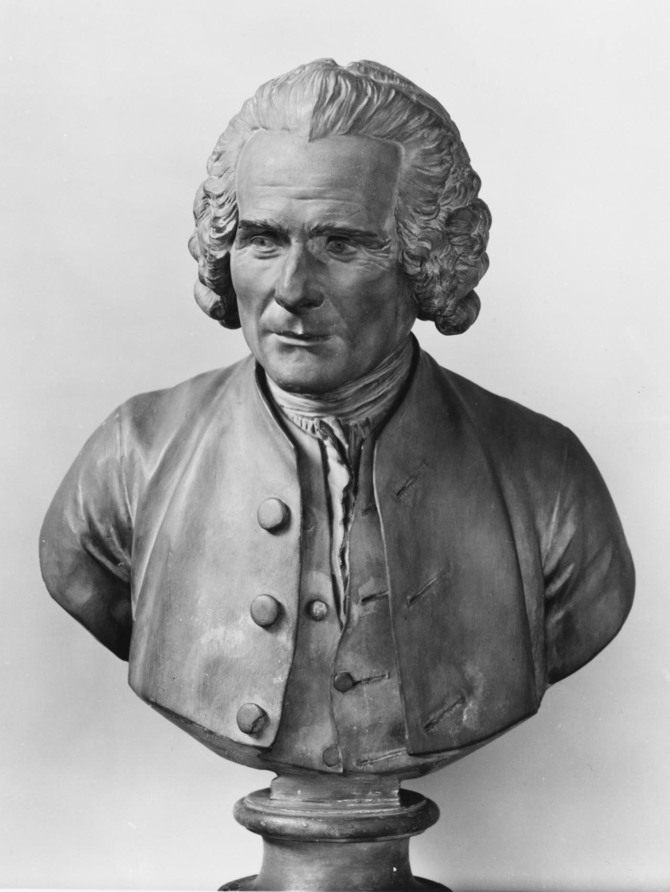

22
12
John Locke
"Szabadság, jogok, beleegyezés, a hatalom a néptől ered."
Puritán családból származom, Oxfordban tanultam, ahol az önfegyelem és a szellemi függetlenség fontosságát sajátítottam el. Bár eredetileg egyházi pálya előtt álltam, végül az orvostudományt választottam. Politikailag a királyi hatalom korlátozását és a parlament jogainak erősítését tartottam fontosnak, emiatt Hollandiába kellett menekülnöm 1683-ban. Filozófiai gondolataim a társadalmi szerződés elvéből indultak.
Voltaire: Ó, kedves Jean-Jacques! Olvasva a soraidat, az embernek kedve támad négykézláb járni és füvet legelni. Sajnos én már kiöregedtem ebből a hobbiból.
Diderot: Barátom, a szenvedélyed lenyűgöző, de ne feledd: az Enciklopédia pont azért született, hogy a tudás felszabadítson!
Jean-Jacques: @Voltaire A gúnyolódás az ész fegyvere, de az igazság a szívben lakozik. Te csak a palotákat látod, én az embert.
Jean-Jacques: @Diderot Hagyja, hogy a természet legyen a tanítómestere!